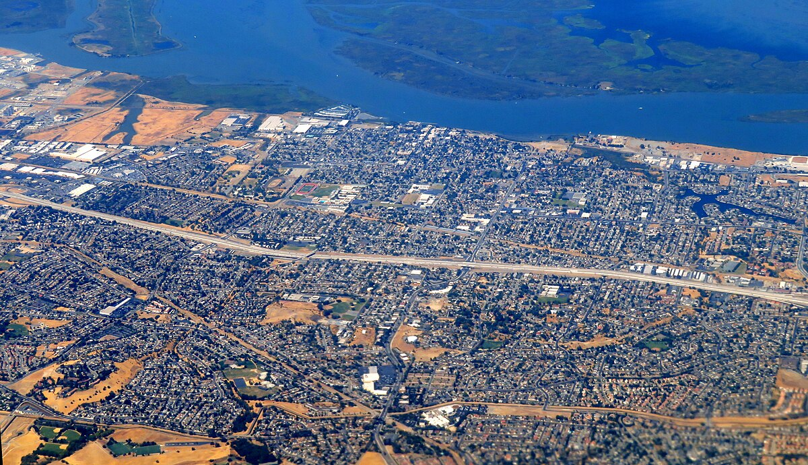

Antioch
California
I grew up in a place called Antioch (the name is from the Bible!). It is one of the last cities along the San Francisco Bay. It's around an hour’s drive to San Francisco, but that can change depending on traffic. Antioch is a suburb, so there are mainly houses with schools, shopping centers, and parks to help the locals living there. If people know the town, it’s probably because they drove through it or saw it on the news for its high crime rate.
